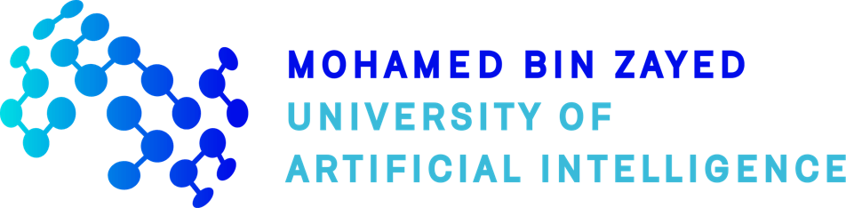
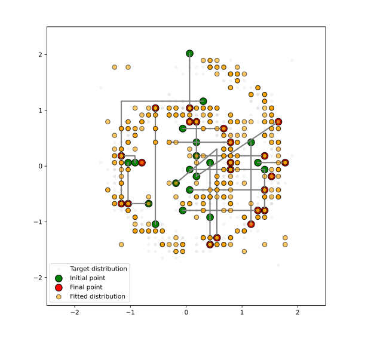
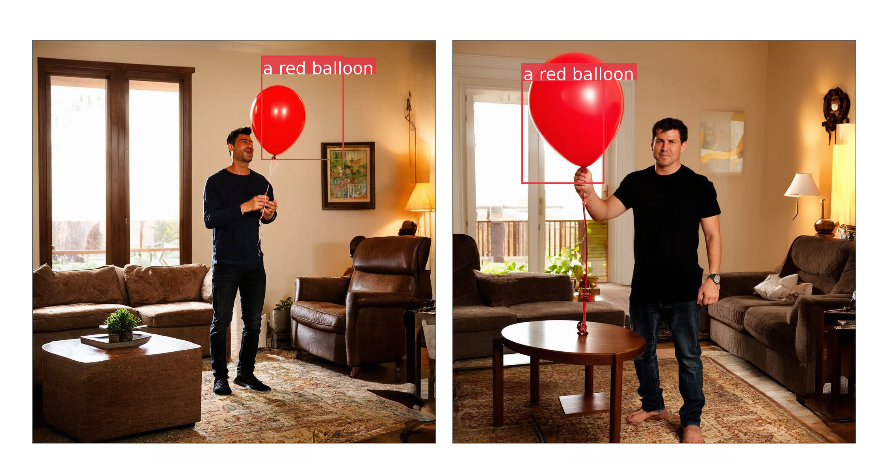
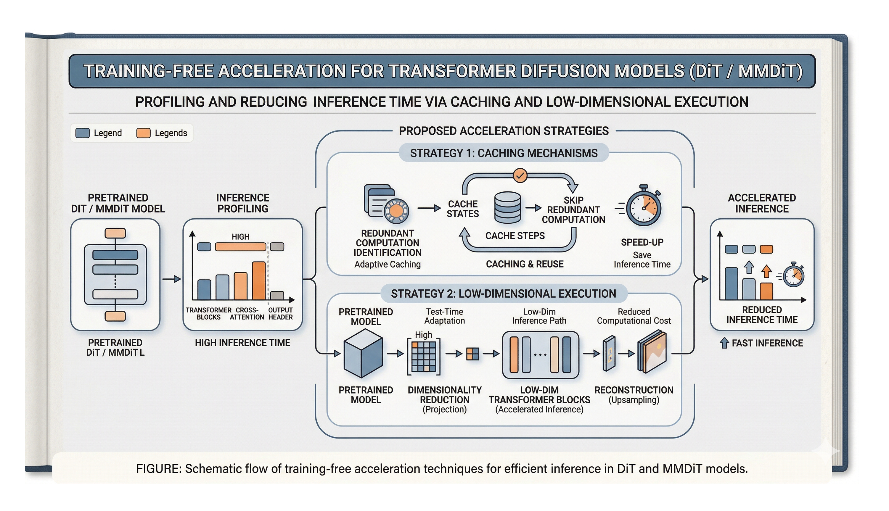
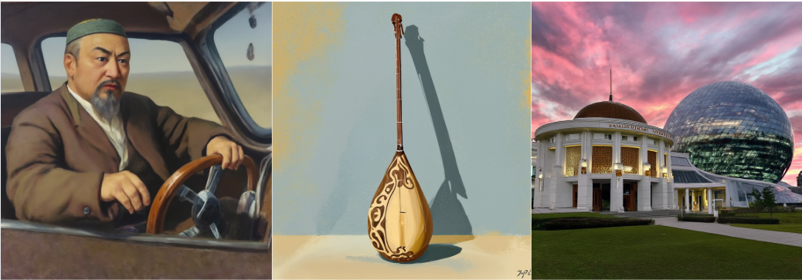
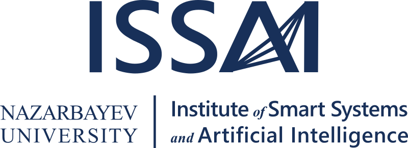
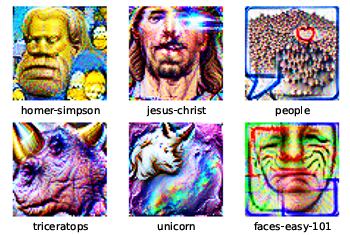
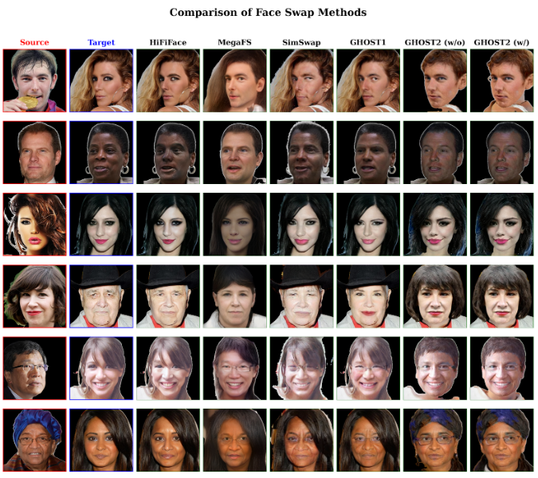

Viacheslav
(Slava) Iablochnikov
M.Sc. Student in Computer Vision
MBZUAI, Abu Dhabi, UAE
Supervisor: Ivan Laptev
CV [PDF]
Biography
I am a first-year M.Sc. student in Computer Vision at MBZUAI, supervised by Prof. Ivan Laptev. My research interests are generative models for image and video, vision–language models, and scientific machine learning.
My research at MBZUAI is driven by the goal of evolving generative systems into robust, physically grounded "world models". To advance this vision, I developed KineMask, a framework for controllable rigid-body interactions co-supervised by Fabio Pizzati, (targeted for ECCV'26). Building on this foundation, my current ongoing projects address two main challenges. First, to further enhance structural consistency, I am investigating dual diffusion generation with 2D/3D conditioning to improve overall visual quality and ensure correct object presence with layout generation. Second, I am exploring training-free inference acceleration for transformer-based diffusion models (DiT / MMDiT) in low-dimensional spaces. Working with Senmao Li under Fahad Khan, we are profiling and adapting pretrained models to reduced dimensionality via caching.
Previously I interned at ISSAI (Nazarbayev University, culturally faithful text-to-image generation), the AIRI & HSE GenAI Lab (face/hair swapping with GANs), and VK Company (adversarial attacks on multimodal models). I received my B.Sc. in Physics (GPA 8.33/10) from HSE University, Russia, with a thesis on diffusion models for astronomical image differencing.
I am open to research collaborations and internship positions. Feel free to reach out!
Generative Models
Image/Video Diffusion
World models
VLMs
Scientific ML
Efficient Inference
News
Sep 2025Started M.Sc. at MBZUAI. Working on physically informed video diffusion (targeting ECCV 2026) & DiT acceleration.
Aug 2025Concluded internship at ISSAI. Lumina full fine-tuning raised the multi-concept Gemini score from 53.60 → 88.29 (+65% relative).
2025🏆 Prize-winner, Deep Learning Olympiad at Skoltech (top 3 / ~1000 participants).
2025Received competitive MBZUAI M.Sc. scholarship (2025–2027).
Dec 2024Preprint Attacks on Multimodal Models released on arXiv. Presented at AIRI Summer School 2024 (top 50 / 1100).
2024🏆 Prize-winner, Deep Learning Olympiad at MIPT (top 10 / 300).
2023–24Teaching assistant for Algorithms & DS and Deep Learning at HSE University.
Publications & Preprints

Attacks on Multimodal Models
arXiv:2412.01725
Poster at AIRI Summer School 2024 (top 50 / 1100).

Categorical Iterative Proportional Fitting via Discrete Diffusion Models
Research Projects & Experience

MBZUAI · Mar 2026 – Present
Dual diffusion conditional generation
Investigating dual diffusion generation with additional 2D/3D conditioning to enhance overall video/image quality and structural consistency (e.g., correct object presence with layout generation).
WIP :)
MBZUAI · Sep 2025 – Mar 2026
KineMask: Physically Informed Video Diffusion for Rigid-Body Interactions
Developed video diffusion models for physically plausible controllable interactions. Implemented and trained Wan2.2 5B and Cosmos-Transfer2 2B image-to-video pipelines with ControlNet; set up data curation, conditioning, mixed-precision multi-GPU training and evaluation. Results outperform strong baselines. Extends the KineMask framework — aimed for ECCV 2026.

MBZUAI · Sep 2025 – Present
Training-Free Acceleration of Transformer Diffusion Models (DiT / MMDiT)
Profiling and reducing inference time of DiT and MMDiT architectures via caching and low-dimensional execution strategies. Investigating training-free test-time adaptation of pretrained diffusion models.
WIP :)

Independent Project · 2025
DreamBooth Lumina2 Training with SingLoRA via MeanFlow
DreamBooth-style Lumina2 fine-tuning combining SingLoRA (compact LoRA replacement), MeanFlow (stable one-step sampling), and dispersive regularization (reduces mode collapse). Optimized for single- and multi-GPU setups. Reduces VRAM and iteration time while maintaining sample quality and diversity.

ISSAI, Nazarbayev University · Jun–Aug 2025Culturally Aware Text-to-Image Generation for Kazakh Imagery
Optimized a next-generation T2I diffusion model (OYLAN2) for culturally faithful Kazakh imagery from multilingual prompts. Curated a targeted prompt–image corpus and trained LoRAs with diffusers. Full fine-tuning of Lumina achieved best multi-concept Gemini mean score of 88.29 (up from 53.60 base — 65% relative gain).

HSE University · Bachelor Thesis 2024–2025
DiffDiff: Diffusion Models for Astronomical Image Differencing
End-to-end pipeline for discovering transient events from sky survey images using a conditional diffusion model (U-Net + DDPM) for difference-image generation. Produces clean difference images for flux and coordinate estimation with uncertainty calibration. Achieves 5.6× speedup over the existing pipeline and up to 93% detection accuracy.

VK Company · Apr–Oct 2024
Adversarial Attacks on Multimodal Models
Adversarial attacks on multimodal systems for image retrieval and VLM pipelines. Implemented and verified patch attacks for CLIP, LLaVA-family, and video retrieval using LLaVA-OneVision. Proposed new attack variants reaching up to 86% success rate in forcing restricted content generation. Main author of the resulting paper.

GenAI Lab, AIRI & HSE · Oct 2024 – May 2025
Face and Hair Swapping with Generative Models
Identity-preserving face and hair swapping building on StyleGAN2 and MegaFS GAN baselines. Introduced attention mechanisms and rotary encodings in the FS+ latent space, cutting LPIPS by 40% and FID@1k by 87% compared with baselines.
Honors & Awards
- 2025–27 MBZUAI M.Sc. Scholarship — competitive, both years.
- 2025 Prize-winner, DL University Olympiad at Skoltech (top 3 / ~1,000).
- 2024 Prize-winner, DL University Olympiad at MIPT (top 10 / 300).
- 2021–25 HSE Excellence Scholarship — competitive, all four B.Sc. years.
Talks & Service
- 2025 Invited for SMILES-2025 summer school, Harbin Institute of Technology, China.
- 2024 Poster at AIRI Summer School (top 50 / 1,100).
- 2025– Member, "Embodied Perception" reading group, MBZUAI.
- 2024 Lecture talks: D3PM, FlashAttention 1&2, pose estimation (PoseBH), visual reasoning (Corvid).
- 2023–24 Teaching Assistant, HSE: Algorithms & DS; Deep Learning.
Education
M.Sc. in Computer Vision · GPA: 3.73/4.00
Mohamed bin Zayed University of AI · Abu Dhabi, UAE
Aug 2025 – Jun 2027 (expected) · Supervisor: Ivan Laptev
PhD courses: Advanced ML (Moulines), Parallel ML Systems (Ho), Sequential Decision Making (Lahlou), Vision & Language (Laptev).
B.Sc. in Physics · GPA: 8.33/10
Higher School of Economics · Moscow, Russia · Sep 2021 – Jun 2025
Thesis: Diffusion models for astronomical image differencing.
Technical Skills
| ML Frameworks | PyTorch, diffusers, transformers, PEFT, JAX/Flax, Triton, DeepSpeed, accelerate, Megatron |
| Systems | Linux, CUDA, Git, Docker, SLURM, Kubernetes, PySpark, MLflow, DVC |
| Programming | Python, NumPy, SciPy, Pandas, SQL, SQLite, MongoDB, Flask, FastAPI |
| Languages | English (C1), German (A2), Russian (native) |